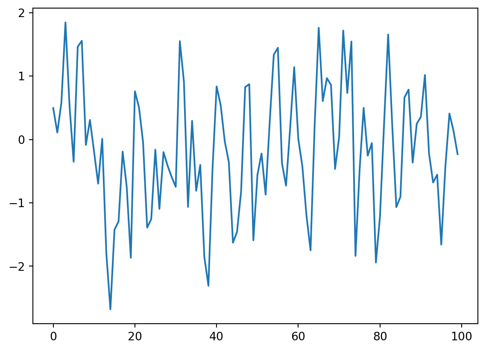

Stochastic - Python Example of a Random Walk Process
stochastic
python
random
notes
Author
MLun Wong
Published
March 12, 2017
Independent Incremental Process
An independent incremental process is a type of stochastic process where the increments (or differences) between values at different times are independent random variables. This means that the value of an increment at one time point does not influence the value of another increment at a different time point. In other words, what happens from one step to the next has no memory of what has happened before.
Formally:
For a stochastic process \(X_T\) with sample space \(t_1, t_2, \dots, t_n \in T\) such that \(t_1 < t_2 < \dots < t_n\) then
A stationary incremental process, on the other hand, is a stochastic process where the statistical properties of the increments are time-invariant. This means that the probability distribution of the increments does not change over time. For instance, if you take any two increments of the same length at different points in the process, they should have the same probability distribution.
Formally:
For an independent incremental process \(X_T\), it is said to be stationary if it satisfy:
More formally, \(\forall t, s, h \in \mathbb{Z}^+\), where \(0 \leq s < t\), the following holds:
\[F_{X_{t+h} - X_{s+h}}(x) = F_{X_t - X_s}(x)\]
where \(F_{X_t - X_s}(x)\) is the cumulative distribution function of the increment \(X_{t} - X(s)\).
Examples
Random walk
The simple random walk process covered here is a classical example of incremental process. Whether or not it is independent and stationary is dictated by whether each steps are independent of each other, and if the distribution from which the steps are sampled is identical for every step.
Advanced discussion
Example of Stationary but not Independent Increments:
A process can be a stationary incremental process without being an independent incremental process. Consider a moving average (MA) process in time series analysis, which is often used to model time series data. In an MA process, the current value is derived from a combination of current and past random shocks (errors), with the random shocks being independent and identically distributed. The increments (changes) in the process could have a constant variance, making them stationary, but they are not independent because the value at time \(t\) is directly influenced by the random shock at time \(t-1\).
Let \(X(t)\) be the MA and \(\epsilon(t)\) be the shock at time \(t\), both being random variables and \(\epsilon(t) \in \mathscr{N}(0, 1)\),
Evidently \(X(t)\) depends on \(t\) because it has memory of \(X(t-1)\).
Here’s a simple example of an MA(1) process, which is a moving average process of order 1:
import numpy as npimport matplotlib.pyplot as pltnp.random.seed(42)n =100# number of pointserrors = np.random.normal(0, 1, n) # independent, identically distributed errorstheta =0.5# parameter of the MA(1) process# MA(1) processY = np.empty(n)Y[0] = errors[0]for t inrange(1, n): Y[t] = errors[t] + theta * errors[t-1] # dependent increments# Y[t] - Y[t-1] are the increments and are stationary but not independent because Y[t] depends on errors[t-1]fig, ax = plt.subplots(1, 1, figsize=(7, 5))ax.plot(Y)plt.show()

In this MA(1) model, the increments are stationary because the distribution of Y[t] - Y[t-1] does not change over time. Each increment has a mean of zero and a constant variance (which can be calculated based on the variance of the errors and the parameter theta). However, the increments are not independent because each Y[t] is dependent on the error term at t-1 (errors[t-1]).
You can see how the path tends to return to the average (\(\mu = 0\)) if it has deviate from it.
This demonstrates that a process can have stationary increments with a consistent statistical distribution while still exhibiting dependence between those increments.